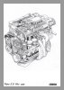
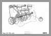
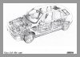
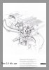
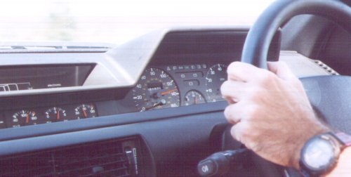
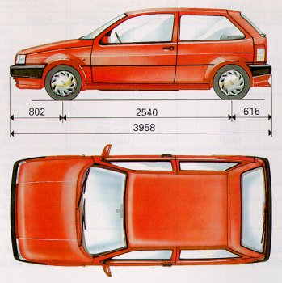
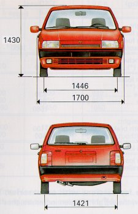

The following are technical specifications taken from the Tipo 16V manual. All figures and facts refer to the 16V model only.
History:
The Tipo 2.0ie 16v derives its power from the legendary Fiat twin-cam engine, an engine whose ancestry can be traced back to 1966 and was designed by the automotive engineering genius Aurelio Lampredi. The first eight valve twin-cam produced 90bhp from 1,438cc's (some 20bhp more than comparable pushrod engines of the day) and evolved into a 1995cc sixteen valve 300bhp turbo powerhouse in competition form, winning no less than 10 world championships in one form or another.Lampredi incorporated many hitherto unseen innovations into his design including the direct acting camshaft for operating the valves, using shimmed "buckets" between cam and valve assembly as a means of adjustment rather than the now de-rigeur (power absorbing) hydraulic adjusters. Also a lightweight aluminium cylinderhead when most were cast iron and con-rods that can only be described as destruction proof !!!
In "Sedicivalvole" form a 1995cc powerplant produces 148bhp @ 6,250rpm and 18Kgm of torque @ 5,000rpm, 16Kgm of this torque being available from 2,500rpm up to 6,000rpm which when matched to the appropriate gear ratios produce a car with extreme flexibility and thus drivability. The engine is very similar in specification and power output to the 2 litre unit fitted to the Lancia Thema series 2 in 1988, also utilizing counter rotating balancer shafts to counteract the inherent imbalance of the in-line four cylinder engine and thus produce a much smoother if very slightly less responsive power unit.
These are some very high resolution (and therefore very large) cut away diagrams of various parts of the engine together with a cut away diagram of the car.




Specifications:
The basic design of the engine remained the same between the 5 and 3 door models. However the power and torque characteristics changed slightly. In the 3 door model the engine was detuned slightly which reduced ultimate bhp but provided more torque at lower revs.
| 5 Door | 3 Door | ||
| Engine code | 160A8.046 | 836A3.000 | |
| Cycles, Number and layout of cylinders | 4-cycle, inline-4 | ||
| Bore x stroke | (mm) |
84x90 | |
| Displacement | (cc) |
1995 | |
| Compression ratio | 10.5:1 (+/-0.15) | ||
| Maximum power output | kW (EEC) |
108 | 102 |
bhp (DIN) |
148 | 142 | |
| at | r.p.m. |
6250 | 6000 |
| Peak torque | Nm (EEC) |
177 | 180 |
kgm (DIN) |
18 | 18.7 | |
| at | r.p.m |
5000 | 4500 |
Use the javascript program below to convert between various power and torque figures.
Balancing:
The engine is equipped with "counterrotating balancer-shafts". They rotate at twice the speed of the crankshaft and serve to balance the dynamic forces that are generated by the crankshaft. As a result these engines operate very smoothly at all speeds.
Timing:
| No of overhead cams driven by toothed belt | 2 | |
| Inlet | opens BTDC | 1° |
| closes ABDC | 45° | |
| Exhaust | opens BBDC | 42° |
| closes ATDC | 4° | |
| Timing tappet clearance | inlet (mm) | 0.8 |
| exhaust (mm) | 0.8 | |
| Cold tappet clearances | inlet (mm) | 0.45+/-0.03 |
| exhaust (mm) | 0.50+/-0.03 | |
Fuel delivery:
Integrated <<I.A.W. Multi-point>> injection/ignition system (M.P.I.)
%CO emission when engine is idling:
Ignition:
Integrated <<I.A.W.04J>> fuel delivery-ignition system
Spark plugs: Fiat/Lancia 7FYSSR or Champion RN7YCC
Spark plug gap 0.85-0.95mm
Lubrication:
Forced-feed gear pump with pressure relief valve.
Full-flow cartirdge oil filter.
Lubrication pressure at 100°C: 3.4 - 4.9 bar (3.5 - 5 kg/sq.cm)
Cooling system:
The cooling system includes a radiator, centrifugal pump and expansion tank.
Bypass thermostat on the secondary recirculation circuit.
Themoststically controlled radiator fan.
Derived circuit for coolant, automatic transmission fluid (water/oil heat exchanger fitted to gearbox).
Clutch:
Mechanical or hydraulic linkange according to the version, self adjusting with no free pedal travel. Adjustable pedal position.
Mechanical Transmission:
Gear ratios:
| 1st gear | 3.545 |
| 2nd gear | 2.238 |
| 3rd gear | 1.541 |
| 4th gear | 1.156 |
| 5th gear | 0.891 |
| Reverse | 3.909 |
| Final drive gear | 3.563 |
| Number of teeth | 16/57 |
Service brakes:
Disc brakes allround with a slaver cylinder for each wheel.
Electronic control with pad wear intrument panel warning light.
Diagonally split hydraulic brake curcuits.
Asbestos-free pads and linings.
Handbrake:
Mechanical, lever actuated handbrake operating on the rear brakes. Handbrake level travel is adjustable from the passenger cabin.
Rims and tyres:
| Front/Rear | Spare | |
| Rims | 6Jx15H2 | 4.00Bx15H |
| Tyres | 185/55R15V (optional 195/50R15V) |
115/70R15 90M |
Both standard and optional tyres are tubeless radials. never use inner tubes in tubeless tyres. Only low-profile snow chains (12 mm) should be put on the car's tyres. Make sure the chains are tightened properly. Do not use chains on the spare tyre.
Suspension specifications:
| Front | Independant, MacPherson suspension with negative reaction rod and antiroll bar. Cast-iron track control arms; connected to wheels with joints, connected to cross member with steel reinforced bushings. |
| Rear | Independant with coil springs. Cast-iron track control arms with ball-bearing joints. Antiroll bar. Rubber damping springs. |
Steering specifications:
Permanently lubricated rack-and-pinion steering. Shock absorbing steering linkage (may also be equipped with steering wheel rake adjustment).
Hydraulic power-assisted steering system (reserviour in the engine compartment).
Turning circle diameter |
10.3 m |
| Number of turns lock-to-lock | 3 |
The following toe-in values refer to unladen cars:
| Front wheel toe-in measured between rims | 0 +/- 1 mm |
| Rear wheel toe-in measureed between rims | -0.5 +/- 2 mm |
Wiring Diagram:
Fiat Tipo 16V ignition system wiring diagram (211Kb and 1013x1483 pixels in size)
System Voltage:
12 Volts
Battery:
Negative ground
| Capacity, 20 hr discharging rate | 60 |
| Cold cranking power (-18°C) | 320 |
Alternator
Nine-diode rectifier with integral voltage regulator. Battery recharges as soon as the engien starts. Nominal output 65A. Cars with air conditioning and special series have alternators with a 90A output.
Fuses
Table represents order in fuse box.
10A Instrument power supply, windscreen/rear window washer pump, back-up lights, steering column switch complex lighting. |
7.5A Direction indicators, right power mirror (if fitted). |
10A Instrument lighting, left taillight, right number plate light, right side light, left trailer taillight. |
7.5A Rear fog-guard lights and panel indicator |
10A Lighting for controls, right taillight, left number plate light, left side light, right trailer taillight. |
20A Front fog lights and panel indicator (if fitted). |
20A Horns, cigarette lighter, stop lights. |
10A Right low beam headlamp. |
20A Power door locks (if fitted). |
10A Left low beam headlamp. |
7.5A Courtesy light, clock power supply (key at STOP). |
10A Left high beam headlamp and panel indicator. |
20A Rear window defroster and panel indicator, door mirror defogging elements (if fitted). |
10A Right high beam headlamp. |
10A Hazard warning lights. |
20A Windscreen wiper. |
25A Radiator fan. |
20A Rear window wiper, power sunroof, driver's seat heating elements (if fitted). |
20A Heater/ventilation fan. |
Maximum speeds after running in |
Gradeability. Fully laden verhicle (%). Valves calculated and valid for vehicle in motion with engine running at peak torque speed. | ||||
5 Door |
3 Door |
||||
| km/h | mph | km/h | mph | ||
| 1st gear | 55 | 34 | 53 | 33 | 44 |
| 2nd gear | 85 | 53 | 83 | 52 | 31 |
| 3rd gear | 130 | 81 | 121 | 76 | 18 |
| 4th gear | 170 | 106 | 161 | 101 | 11.5 |
| 5th gear | 207 | 129 | 202 | 126 | 8 |
| Reverse | 50 | 31 | 47 | 29 | 46 |
I don't know why the 0-60 mph times below are so different between the 5 door and 3 door models.
| 5 Door | 3 Door | |
| 0-60 mph | 7.9 | 9.8 |
These following unofficial performance figures are taken from Top Gear Magazine:
0-100mph in 22.4 seconds
Standing 1/4 mile 16.3 seconds @ 87mph
30-50mph 7.3 seconds (4th gear) 10.1 seconds (5th gear)
50-70mph 7.5 seconds (4th gear) 10.1 seconds (5th gear)
70-90mph 7.8 seconds (4th gear) 11.8 seconds (5th gear)
Power to weight ratio : 127 Bhp per ton

I found driving in Germany is not as much as it's made out to be. The German drivers consistently tailgate, hardly indicate and don't use any form of acknowledgement to let you pull out. Helped by supped up brakes they also brake as late as possible which is very unnerving if they are approaching from the rear. Many of the cars are extremely powerful big black imposing BMW's or Mercedes Benz.
Some sections of the autobahns are only two lanes, and given the high speeds that the traffic can travel, it makes it very difficult pull out into the inside lane to overtake. You can be for example stuck behind a lorry doing 60 mph, the road can look clear behind so you pull out, only to have, seconds later, a car doing 150 mph coming up behind you. This tends to make journeys an annoying cycle of fast and slow. By the time you have built up a good speed somebody pulls out infront of you slowing you down again.
On more occasions than I care to remember, a queue would form of say four or five cars stuck behind a slowish car in the middle of an overtaking maneuver. Cars approaching the rear of the queue would dart down the inside of the queue cutting in at the front (with no indicators of course) causing everybody already in the queue to almost concertina into one another under braking.
I suppose the best advice I can give is to make sure your tyres and brakes are in excellent condition before driving in Germany!!
It's not all doom and gloom though, not having to worry about what speed your doing is so relaxing, you can simply concentrate on the actual driving and are far more aware of what's going on around you rather than constantly checking the speedometer. I also believe that the majority of people drive within their own and their cars ability.
Weights in kg based on 3dr
| Kerb weight (including fuel, spare, tools and accessories) | 1180 |
| Payload including the driver (*) | 420 |
| Maximum loads permitted (**) | |
front axle |
920 |
rear axle |
850 |
total |
1710 |
| Towing weight | |
trailer with brakes |
1300 |
| trailer without brakes | 400 |
| Maximum load on the roof | 80 |
| Maximum load on the ball coupling (trailer with brakes) | 75 |
(*) Note for versions with accessories: if special equipment is fitted (non-standard air conditioner, sun roof, trailer) the weight unladen increases, thus reducing the payload with regard to the maximum loads allowed.
(**) Loads must never be exceeded, the driver must arrange the goods in the luggage compartment and/or load surface in sush a way as to respect these limits.
All measurments in mm.
Luggage compartment volume (VDA standard): 350 litres. Luggage compartment volume flush with rear parcel sheft with rear seat folded down: 710 litres. Total volume: 1100 litres.


| Front tracking | 1446 |
| Rear tracking | 1421 |
| Wheel base | 2540 |
| Total length | 3958 |
| Height | 1430 |
| Width (excluding wing mirrors) | 1700 |
All in litres
| Fuel tank | 51 |
| including a reserve of | 5/8 |
| Radiator, engine, heater and expansion tank | 6.9 |
| Engine sump | 4.8 |
| Engine sump and filter | 5.2 |
| Transaxle | 2 |
| Hydraulic power steering | 0.75 |
| Front and rear brake circuits | 0.40 |
| Brake curcuits with ABS | 0.52 |
| Windscreen and rear window fluid reservior | 5 |
Oil consumption:
Average oil consumption 1.0 litres/1000 km
Fuel consumption (litres/100 km)
| as per EEC standards | as per F.T.P.75 standards | ||||
| Urban cycle | at 90 km/h (56 mph) |
at 120 km/h (75 mph) |
City | Highway | Combined |
| 11.5 (24.6 mpg) |
7.0 (40.4 mpg) |
8.5 (33.2 mpg) |
10.2 | 6.6 | 8.6 |
The fuel consumption values listed in the table above were determined in offical tests utilizing procedures defined in EEC directives. Simulated city driving fuel consumption is measured on a test bed while constand speed (90 and 120 km/h) fuel economy is measured on a dry, level test track and using test bed procedures. These values may be useful for comparing different vehicles. Actual fuel consumption might be slightly different from offical values due to traffic conditions, driving style, weather and the car's general condition.
The following table shows the correct tyre pressures in bar and psi. The pressures in bar are from the Tipo Manual and I have calculated the psi figures based on 1 bar = 14.5 psi. Remember to check the values when the tyres are cold.
Front |
Rear |
Spare |
|||
Average load |
Fully laden |
Average load |
Fully laden |
||
| bar | 2.5 |
2.7 |
2.2 |
2.4 |
4.2 |
| psi | 36.25 |
39.15 |
31.9 |
34.8 |
60.9 |
I use 2.5 bar in the front and 2.2 bar in the rear and all sets of tyres I have fitted have worn perfectly evenly. I check the tyre pressures every 1 - 2 weeks
The spare is a 115×70 R15 space saver. Never exceed 80 km/h whilst it is fitted. It has a maximum life of 3,000 km. Never use two spares on the car at the same time.